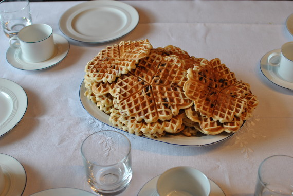

Kirschwaffeln

- Zubereitung: ca. 20 Minuten
- Für 4 Personen
Zutaten
- 125 g weiche Butter
- 125 g Zucker
- 3 Eier
- 250 g Mehl
- 1/8 l Milch
- 200 g Sauerkirschen (aus dem Glas, gut abgetropft)
- Puderzucker
- Vanillezucker
Zubereitung
- Die Butter und den Zucker schaumig schlagen. Nach und nach Eier, Mehl und Milch in den Teig rühren.
- Die Sauerkirschen unter den Teig mischen. Das Waffeleisen vorheizen und einfetten.
- Portionsweise die Waffeln backen, herausnehmen und mit einer Mischung aus Puder- und Vanillezucker bestäuben.